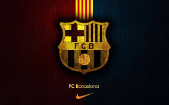
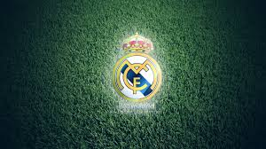

FC Barcelona

* Full name : Futbol Club Barcelona
* Short name : FCB
* Founded : 29 November 1899; 120 years ago
as Foot-Ball Club Barcelona
* Ground : Camp Nou
* Capacity : 99,354[1]
* President : Josep Maria Bartomeu
* Head coach : Ronald Koeman
* League : La Liga
* 2019–20 : La Liga, 2nd
* Nickname(s) : Barça or Blaugrana (team),
Culés or Barcelonistas (supporters),
Blaugranes or Azulgranas (supporters)
* Honours :
Competition | Titles | Seasons |
|---|
La Liga | 26 | 1929, 1944–45, 1947–48, 1948–49, 1951–52, 1952–53, 1958–59, 1959–60, 1973–74,
1984–85, 1990–91, 1991–92, 1992–93, 1993–94, 1997–98, 1998–99, 2004–05, 2005–06, 2008–09, 2009–10, 2010–11, 2012–13, 2014–15, 2015–16, 2017–18, 2018–19 |
|---|
Copa del Rey | 30 | 1909–10, 1911–12, 1912–13, 1919–20, 1921–22, 1924–25, 1925–26, 1927–28, 1941–42, 1950–51, 1951–52, 1952–53, 1956–57, 1958–59, 1962–63, 1967–68, 1970–71, 1977–78, 1980–81, 1982–83, 1987–88, 1989–90, 1996–97, 1997–98, 2008–09, 2011–12, 2014–15, 2015–16, 2016–17, 2017–18 |
|---|
Supercopa de España | 13 | 1983, 1991, 1992, 1994, 1996, 2005, 2006, 2009, 2010, 2011, 2013, 2016, 2018 |
|---|
Copa Eva Duarte | 3 | 1948, 1952, 1953 |
|---|
Copa de la Liga | 2 | 1983, 1986 |
|---|
UEFA Champions League | 5 | 1991–92, 2005–06, 2008–09, 2010–11, 2014–15 |
|---|
UEFA Cup | 4 | 1978–79, 1981–82, 1988–89, 1996–97 |
|---|
UEFA Super Cup | 5 | 1992, 1997, 2009, 2011, 2015 |
|---|
Inter-Cities Fairs Cup | 3 | 1955–58, 1958–60, 1965–66 |
|---|
FIFA Club World Cup | 3 | 2009, 2011, 2015 |
|---|
* Current squad :
No. | Pos. | Nation | Player | | No. | Pos. | Nation | Player |
|---|
1 | GK | Germany | André ter Stegen | | 15 | DF | France | Clément Lenglet |
|---|
2 | DF | Portugal | Nélson Semedo | | 18 | DF | Spain | Jordi Alba |
|---|
3 | DF | Spain | Gerard Piqué (3rd captain) | | 19 | FW | Denmark | Martin Braithwaite |
|---|
5 | MF | Spain | Sergio Busquets (vice-cap.) | | 20 | DF | Spain | Sergi Roberto (4th captain) |
|---|
6 | DF | France | Jean-Clair Todibo | | 21 | MF | Netherlands | Frenkie de Jong |
|---|
7 | FW | France | Antoine Griezmann | | 23 | DF | France | Samuel Umtiti |
|---|
8 | MF | BIH | Miralem Pjanic | | 24 | DF | Spain | Junior Firpo |
|---|
9 | FW | Uruguay | Luis Suárez | | — | MF | Spain | Carles Aleñá |
|---|
10 | FW | Argentina | Lionel Messi (captain) | | — | MF | Brazil | Philippe Coutinho |
|---|
11 | FW | France | Ousmane Dembélé | | — | MF | Spain | Pedri |
|---|
12 | MF | Brazil | Rafinha | | | | | |
|---|
13 | GK | Brazil | Neto | | | | | |
|---|
|
|---|
Real Madrid

* Full name : Real Madrid Club de Fútbol
* Founded : March 1902; 118 years ago
as Madrid Football Club
* Ground : Estadio Santiago Bernabéu
* Capacity : 81,044
* President : Florentino Pérez
* Head coach : Zinedine Zidane
* League : La Liga
* 2019–20 : La Liga, 1st of 20
* Nickname(s) : Los Blancos (The Whites)
Los Merengues (The Meringues)
Los Vikingos (The Vikings)
La Casa Blanca (The White House)
* Honours :
Competition | Titles | Seasons |
|---|
La Liga | 34 | 1931–32, 1932–33, 1953–54, 1954–55, 1956–57, 1957–58, 1960–61, 1961–62, 1962–63, 1963–64, 1964–65, 1966–67, 1967–68, 1968–69, 1971–72, 1974–75, 1975–76, 1977–78, 1978–79, 1979–80, 1985–86, 1986–87, 1987–88, 1988–89, 1989–90, 1994–95, 1996–97, 2000–01, 2002–03, 2006–07, 2007–08, 2011–12, 2016–17, 2019–20 |
|---|
Copa del Rey | 19 | 1905, 1906, 1907, 1908, 1917, 1934, 1936, 1946, 1947, 1961–62, 1969–70, 1973–74, 1974–75, 1979–80, 1981–82, 1988–89, 1992–93, 2010–11, 2013–14 |
|---|
Supercopa de España | 11 | 1988, 1989, 1990, 1993, 1997, 2001, 2003, 2008, 2012, 2017, 2019–20 |
|---|
Copa Eva Duarte | 1 | 1947 |
|---|
Copa de la Liga | 1 | 1985 |
|---|
UEFA Champions League | 13 | 1955–56, 1956–57, 1957–58, 1958–59, 1959–60, 1965–66, 1997–98, 1999–2000, 2001–02, 2013–14, 2015–16, 2016–17, 2017–18 |
|---|
UEFA Cup | 2 | 1984–85, 1985–86 |
|---|
UEFA Super Cup | 4 | 2002, 2014, 2016, 2017 |
|---|
Internatinental Cup | 3 | 1960, 1998, 2002 |
|---|
FIFA Club World Cup | 4 | 2014, 2016, 2017, 2018 |
|---|
* Current squad :
No. | Pos. | Nation | Player | | No. | Pos. | Nation | Player |
|---|
1 | GK | Belgium | Thibaut Courtois | | 15 | MF | Uruguay | Federico Valverde |
|---|
2 | DF | Spain | Dani Carvajal | | 16 | FW | Spain | Borja Mayoral |
|---|
3 | DF | Brazil | Éder Militão | | 17 | FW | Spain | Lucas Vázquez |
|---|
4 | DF | Spain | Sergio Ramos (captain) | | 18 | FW | Serbia | Luka Jović |
|---|
5 | DF | France | Raphaël Varane (4th cap.) | | 19 | DF | Spain | Álvaro Odriozola |
|---|
6 | DF | Spain | Nacho | | 20 | FW | Brazil | Vinícius Júnior |
|---|
7 | FW | Belgium | Eden Hazard | | 21 | MF | Norway | Martin Ødegaard |
|---|
8 | MF | Germany | Toni Kroos | | 22 | MF | Spain | Isco |
|---|
9 | FW | France | Karim Benzema (3rd cap.) | | 23 | DF | France | Ferland Mendy |
|---|
10 | MF | Croatia | Luka Modrić | | 24 | FW | DOM | Mariano |
|---|
11 | FW | Spain | Marco Asensio | | 27 | FW | Brazil | Rodrygo |
|---|
12 | DF | Brazil | Marcelo (vice-captain) | | 29 | GK | Ukraine | Andriy Lunin |
|---|
14 | MF | Brazil | Casemiro | | | | | |
|---|
|
|---|